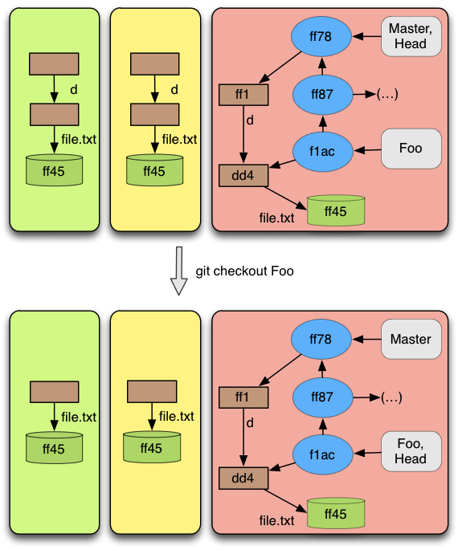

Description
The checkout operation is used to update the working directory and index with a set of files from a commit. In this project, we have explored only the case the checkout operation is used with a branch. In this case, all the files from the commit pointed by the branch are exported to the working directory and index. This was the most difficult operation to explore , because it behaves in a non intuitive way. We will try to explain it and in the examples we show you a sequence of operations that causes the Git to loose information. This is a proof of the complexity of this operation.
Pre-conditions
As we have said before, this operation is not intuitive. In our opinion this operation should have as pre-condition something like "Everything that is in index should be committed". Instead Git tries to relax this pre-condition and we have the following:
The branch we are checking out exists;
Everything that is in the index has to be in the current commit with the same content, except if:
The content of a file is the same in the current and destination commit (warning is thrown)
Exists a file in the index, and that file does not exists neither in the current nor in the destination commit (warning is thrown)
Content of the file in the index is the same as in the destination commit (no warning is thrown)
About the first pre-condition there are not much to say. If we want to checkout a branch, the branch should exist.
The problem here is the second pre-condition. There are a lot of exceptions when a file is not in the current commit with the same content. To simplify the exposition of this pre-condition, lets assume we have a file f, which is not in current commit, or at least it is not with the same content. All other files from index are in the current commit, with the same content. Relatively to f, if at least one of the exceptions enumerated above is satisfied, then the checkout operation will proceed. Now lets analyse each one of the exceptions. The last says that f can be in the commit we are checking out with the same content. So , even if f is not commit, but it is in the commit we are checking out ,Git will proceed with the operation. The exception marked as 2, says that f does not exists neither in the current commit nor in the commit we are checking out. It means that if f has just been created and a checkout operation is performed then if the file does not exists in the commit being checked out, the operation will proceed. The last exception says that if there exists a file with the same path and the same content in the commit being checked out, then the operation will proceed. In this last case Git does not warns the user.
Result
As we have said before, in this manual we have concentrated our efforts in the index and repository, simplifying as most as possible the working directory. So, we will just explain what happens with the index after a checkout operation is performed. We do not make any description about the files that are in the working directory but not in index.
The first thing the reader should know is that the HEAD, after a checkout is performed, identifies the branch which was checked out.There is one more alteration. The index when a checkout is performed has to be updated to reflect the target commit object. The result of it is not intuitive. To understand it lets assume that the checkout operation has not yet been performed. Consider three relations from file to content.
CA: Files from the current commit and their respective content;
IA: Files from index and respective content;
CB: Files from the commit we are trying to checkout and their respective content.
After understanding this three relations it is simpler to understand what happens with the index. Lets also assume that (IA − CA) is a relation that contains the files from IA which are not in CA with the same content. It mean that (IA − CA) will contain the new files and the modified files relatively to the last commit. Now, consider CB + +(IA − CA) as being all the files from CB, but if the files are in (IA−CA), they will keep the content from (IA − CA). If when comparing the index with the current commit it contains only new files and modified files (not deleted files) then it is all. INDEX = CB + +(IA − CA). When the index contains removed files, or in other words, files that are in CA but are not in IA (CA−IA is not empty), then case the file that is marked as removed exists in CB it will be marked as removed, otherwise the removed information is ignored. So, the result of performing a checkout is: INDEX = (CB + +(IA − CA)) − (CA − IA). All files from CB are overwritten by the files that are in the index but not in CA and from the result of this, the files that are marked as removed will not be in index.
Examples
As referred above checkout behaves in a non-intuitive way. We recommend that before performing a checkout, the user ensures that all the files from the index are committed, otherwise it is not be easy to guess what will happen. Thus, the example shown in figure 12, contains an example in which all content in the index and working directory are committed (the safe case). When performing a checkout we can see in this figure that the repository and index are updated to reflect the branch checked out, more concretely the commit pointed by the branch. Something the reader can also observe is
 Figure 12